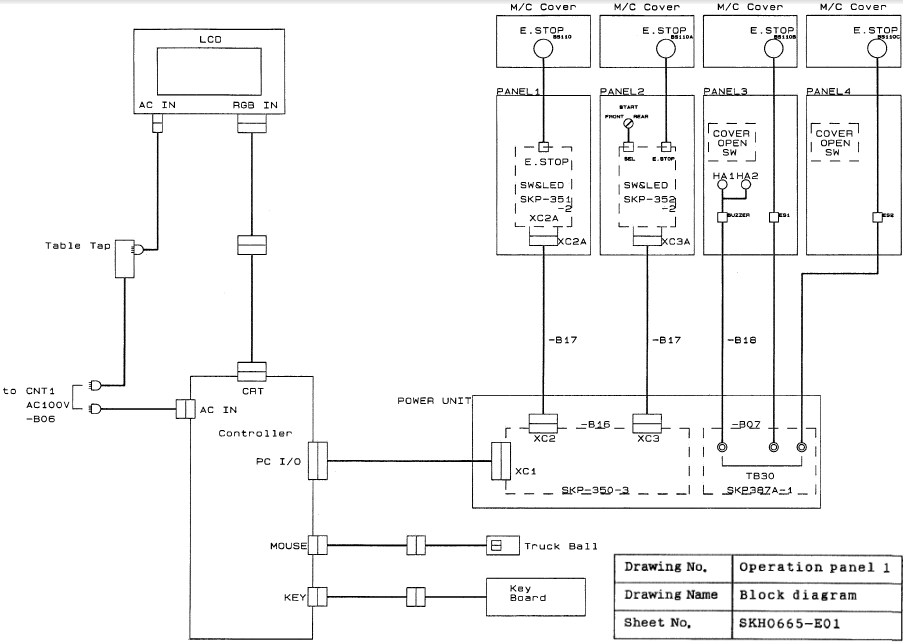

Service History
Subject: NS-6040 cover open switch message. Handler unable to start
Handler Model: NS-6040 (ASE(M))
Controller: SRC520
Date: 19~20 Sep 2011
Symptom
NS-6040 Door open message, handler unable to start.
Action
1) Operation Panel pause button always ON.
2) SPEL INPUT for PAUSE always ON (Input Bit 193).
3) SPEL OUTPUT for pause able to trigger ON/OFF button and INPUT bit 193 still ON.
4) CONTEC I/O board replaced but same.
5) Request customer to trace wiring following the path onwards of CONTEC I/O. Refer to Operation Panel drawing.
6) XC1 cable from CONTEC I/O card to SKP350 board.
7) If unable to solve problem, to replace SKP350 board.

Cause
Remarks
- re-sit all switches connectors(XC911, XC912,XC914,XC914B).